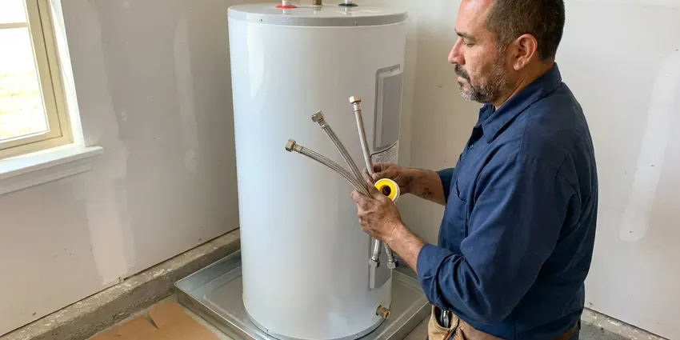

PEX Pipe Installation in Portage, MI
For top-notch PEX pipe installation in Portage, MI, trust the seasoned plumbers at CHV Plumbing to get the job done right.
- Local Portage Experts
- Upfront Pricing
- Durable & Flexible Piping
- Licensed, Insured Plumbers

Switch to PEX with CHV Plumbing in Portage, MI.
Get modern, durable plumbing for your home with our skilled team.
Professional PEX Pipe Installation and Whole-Home Repiping in Portage, MI
CHV Plumbing focuses on PEX pipe installation, offering Portage homeowners a modern and durable alternative to traditional plumbing materials. PEX, or cross-linked polyethylene, is flexible, corrosion-resistant and much more forgiving than rigid pipe when temperatures drop. Pipes in exterior walls, crawlspaces, garages and poorly insulated additions are the most common places for a freeze to cause a break.
Our expertise includes:
- Manifold and home-run layouts with separate fixture shutoffs
- Whole-home PEX repipes routed overhead to avoid slab leaks
- PEX main water line connections and installations

Additional Plumbing Installation Services in Portage, MI
We install water heaters, pumps, lines, and fixtures across Portage, MI with careful, permitted work that passes inspection the first time.



Professional water heater installation, Portage


Customers
Why Choose CHV Plumbing for PEX Pipe Installation in Portage, MI?
Choosing CHV Plumbing for your PEX pipe installation means selecting a team committed to quality and customer satisfaction. We understand the plumbing needs of homes in Portage, MI and provide custom solutions.
- Cost-Effective, PEX is generally less expensive to install than copper, saving you money on labor and materials.
- Flexible, PEX can bend around corners, cutting the need for fittings and potential leak points.
- Fewer Joints, Long continuous runs mean fewer hidden fittings that could leak.
Citywide Coverage
Our team covers the entire Portage area, so no matter where you are located, expert PEX pipe installation is just a phone call away. We understand the plumbing needs of homes throughout Portage.
Experienced Team
Each plumber at CHV Plumbing specializes in PEX systems, trained to handle everything from minor repairs to full home repipes. You can trust our professionals to complete your PEX pipe installation with precision and efficiency.
Safety-First Approach
Safety and code compliance are top priorities on every PEX pipe installation we take on. We follow all local Portage and state plumbing codes, so your new PEX system is installed safely and passes all inspection.
Trusted Certified Portage Plumbing Services Professionals
At CHV Plumbing, we take pride in providing licensed, certified plumbing services throughout Portage, MI. Backed by recognized industry credentials, our experienced plumbers combine technical skill with genuine customer care. Whether it is repair, installation, or maintenance, we follow strict safety and quality standards to deliver long-lasting results you can trust.
Call Us Now PHCC Plumbing Contractor Recognition
PHCC Plumbing Contractor Recognition Better Business Bureau (BBB) Accreditation
Better Business Bureau (BBB) Accreditation Angi Certified Pro
Angi Certified Pro ISO 9001 Quality Management Certification
ISO 9001 Quality Management CertificationDurable PEX Pipe Installation Services in Portage, MI
Remodel and Addition PEX Rough-In in Portage
Kitchen and bathroom remodels are a great time to replace old supply lines with PEX. We rough in new lines to the correct heights for vanities, showers, tubs and appliances, then pressure test before the walls are closed. Additions and guest suites get correctly sized lines tied into your existing system. We coordinate with your contractor to keep the project schedule on track.

New Construction PEX Plumbing in Portage, MI
CHV Plumbing partners with builders and homeowners on PEX pipe installation for new construction across Portage, MI. PEX is an ideal choice for new homes due to its flexibility, ease of installation and cost-effectiveness. We design and install complete PEX plumbing systems, providing good water distribution and long-term reliability for your brand-new home.
Full Home PEX Repiping in Portage
If your home has old, corroded or leaking pipes, a full home PEX repipe can greatly improve your plumbing system. We remove outdated galvanized, copper or polybutylene pipes and replace them with durable PEX, upgrading your entire water delivery system. This prevents future leaks, improves water pressure and eliminates the rust-colored water often seen with older piping in Portage.
PEX for Water Line Replacement in Portage
When your main water line from the street to your home needs replacement, PEX is an excellent option. Its flexibility allows for easier trenchless or minimal-dig installations, reducing disruption to your yard in Portage. PEX main lines handle ground movement and resist corrosion better than rigid pipe. Freeze and thaw cycles move the soil around buried pipes, which can crack older clay and cast iron sewer laterals.
PEX-B Crimp and Clamp Systems in Portage
PEX-B is stiffer and more affordable, and it is joined with copper crimp rings or stainless steel cinch clamps over brass or poly fittings. It is a solid option for smaller projects and budget-conscious repipes. Brands like Viega, Zurn and SharkBite offer reliable PEX-B systems. We use a go/no-go gauge on every crimp to verify a proper seal.
PEX Main Water Line Installation in Portage
The main water line brings water into your home, and a failing one can cause serious issues. We provide expert PEX main water line installation, replacing old, damaged lines with durable PEX. This upgrade improves water flow, reduces the risk of future leaks and offers strong resistance to ground shifting and corrosion. Our team ensures proper trenching and the connection to your municipal supply.
PEX-A Expansion Fitting Systems in Portage, MI
PEX-A, such as Uponor, uses an expansion tool to stretch the pipe and a ring over the fitting, which then shrinks back into a tight seal. The fittings have a larger inner diameter, so flow restriction is lower. PEX-A is also more flexible and can recover from kinks with a heat gun. It is our preferred choice for many full repipes.

PEX-A vs. PEX-B Installation in Portage
We offer installation for both PEX-A and PEX-B piping and understand the different advantages of each. PEX-A, often preferred for its flexibility and ability to recover from minor kinks, uses expansion fittings. PEX-B is more rigid but also very durable, usually using crimp or compression fittings. Our plumbers in Portage can help you decide which type of PEX suits your project, considering factors like budget and application.
PEX Pipe Installation Near Me in Portage, MI
Searching for 'PEX pipe installation near me' in Portage? You have found the right team. CHV Plumbing is a local plumbing company dedicated to serving our community with modern, reliable plumbing.
We understand the value of having a reliable local plumber who knows the requirements of homes in Portage. Being nearby lets us offer timely service, so your PEX pipe installation project is handled with speed and professionalism.
CHV Plumbing at a Glance
- Fully licensed plumbing team covering Portage, MI
- 24/7 emergency service with same-day scheduling
- Clear written estimates, no hidden fees
- 4.9-star rated by 670+ Michigan customers
Portage Map
Portage Information
- Population
- 49,302
- Area codes
- 269/616/248
- Service area
- Portage and communities within 40 miles
- Nearby
- Kalamazoo, Battle Creek, Holland, Kentwood
Hard water, aging copper and slab-on-grade construction leave many homes with repeat pinhole and slab leaks, and an overhead PEX repipe ends that cycle.
Expert Services
Trust our professionals for reliable CHV Plumbing solutions in Portage, MI.
Our Specialized Plumbing Services in Portage, MI
At CHV Plumbing, we provide a complete range of plumbing services across Portage, MI. From leak detection to full system installations, our team ensures fast, precise, and affordable service for both residential and commercial properties. Explore our core services below:


How We Install PEX Pipe in Portage, MI
We follow a clear, organized process so your PEX installation is quick, clean and inspected.
Request a Quote
Contact CHV Plumbing by calling (810) 380-5918 to discuss your PEX piping needs. We will schedule a good time for a professional assessment and provide a transparent, detailed quote.
On-Site Assessment
Our experienced plumbers will visit your Portage home to evaluate your existing plumbing system, determine the scope of work and discuss the best PEX solutions for your property.
Installation Day
We arrive on schedule, prepare the work area and carefully install your new PEX piping, making sure all connections are secure and up to code. We work efficiently to complete the project with little interruption.
Frequently Asked Questions About PEX Pipe Installation in Portage
A whole-home PEX repipe typically costs $4,500 to $12,000 depending on home size, bathroom count and access. Smaller jobs like a single bathroom remodel rough-in often run $800 to $2,500.
We install quality PEX piping from reputable manufacturers such as Uponor (PEX-A), Viega (PEX-B) and Zurn (PEX-B). We also work with other trusted brands like SharkBite for fittings, so the best materials are used for your installation.
Multiple pinhole leaks, discolored water, low pressure throughout the house and gray polybutylene pipe are common signs. Recurring slab leaks are also a good reason to repipe overhead.
Small repairs are possible for handy homeowners, but a full repipe requires proper sizing, support spacing and code compliance. Mistakes behind walls can cause hidden leaks and failed inspections.
Yes, PEX pipe is certified safe for drinking water. It does not leach chemicals into the water and resists scale and chlorine corrosion, which can affect older metal pipes. PEX is a popular choice for potable water systems in homes across Portage, MI due to its safety and performance.
Yes, most reputable PEX manufacturers offer warranties on their piping, usually ranging from 25 years to a lifetime. CHV Plumbing also provides a warranty on our labor for PEX pipe installations, giving you double protection for your investment.
While PEX is simpler to install than copper, professional installation is strongly recommended. Correct sizing, routing and secure connections are essential for preventing leaks and ensuring system longevity. Improper DIY installation can lead to costly water damage and code violations.
Most whole-home PEX repipes take two to four days. Larger homes or difficult attic access can take a bit longer.
What People Are Saying About Our Plumbing Experts?

James P.
Our commercial plumbing system had a leak under the sink, and CHV Plumbing handled it professionally. The plumbers arrived quickly and restored everything without disruption to our customers.
Commercial Plumbing · Grand Rapids, MI
Sofia M.
Two new toilets installed in one visit, no mess left behind, and the tech even adjusted a faucet he noticed was dripping. Fair pricing and really friendly.
Toilet Installation · Grand Rapids, MI
Mark T.
When our office needed drain cleaning, CHV Plumbing provided quick, reliable service. The plumber arrived on time and made sure every drain flowed perfectly before leaving. Very satisfied.
Drain Cleaning · Battle Creek, MIRobert G.
The trenchless sewer replacement saved our front yard. They walked us through the camera inspection footage first so we knew exactly what we were paying for.
Sewer Line Replacement · Kentwood, MI
Daniel K.
A pipe burst at 11 pm and they actually answered. The plumber showed up within the hour, shut everything down, and had us back to normal the next morning. Could not ask for more.
Emergency Plumbing · Wyoming, MI
Emily R.
I called CHV Plumbing for plumbing repair, and the technician was fast, polite, and thorough. They explained the problem clearly and fixed it the same day. I will definitely hire them again. Highly recommended!
Plumbing Repair · Kentwood, MI